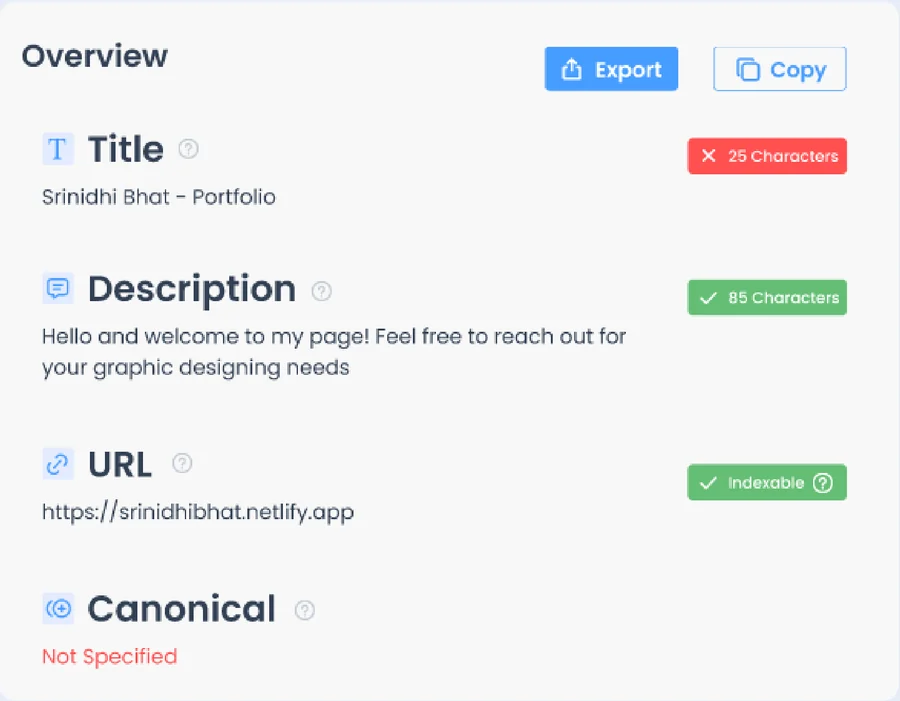
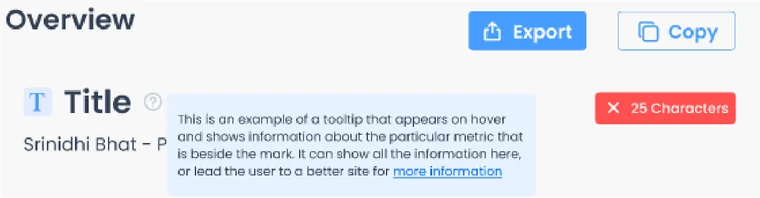

Two details
A verdict on every row, and help one hover away

Pass and fail chips
- Red cross: the check fails. Green tick: it passes.
- The chip carries the number behind the verdict: 25 characters for the title, 85 for the description.
- Both counts are the real lengths of the title and description on the test page.

Help tooltips
- Every label has a small question mark beside it.
- Hovering over it opens a short note about that item, with a link to read more.
- The text in the prototype is a placeholder that explains what the tooltip is for.